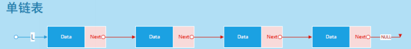
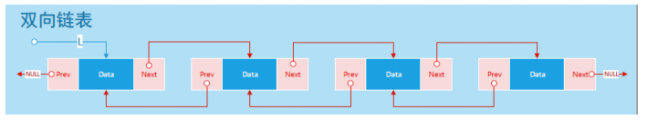
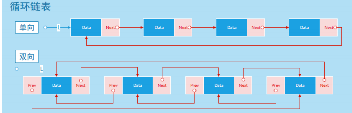

链表
一、数组与链表
链表 [Linked List]：链表是由一组不必相连（不必相连：可以连续也可以不连续）的内 存结构（节点），按特定的顺序链接在一起的抽象数据类型。
数组和链表的区别和优缺点： 数组是一种连续存储线性结构，元素类型相同，大小相等
| 优点 | 缺点 |
|---|---|
| 存取速度快 | 事先必须知道数组的长度 |
| 插入删除元素很慢 | |
| 空间通常是有限制的 | |
| 需要大块连续的内存块 | |
| 插入删除元素的效率很低 |
链表是离散存储线性结构 n 个节点离散分配，彼此通过指针相连，每个节点只有一个前驱节点，每个节点只有一 个后续节点，首节点没有前驱节点，尾节点没有后续节点。
| 链表优点 | 缺点 |
|---|---|
| 空间没有限制 | |
| 插入删除元素很快 | 存取速度很慢 |
二、链表分类
2.1 单链表
单链表 [Linked List]：由各个内存结构通过一个 Next 指针链接在一起组成，每一个内存结构都存在后继内存结构(链尾除外），内存结构由数据域和 Next 指针域组成。如图：

Java表达单链表结点的结构：
class LinkedList<E> {
Node first;
class Node {
E elem;
Node next;
}
}
2.1.1 插入
插入的位置为i，插入的元素为elem。从头结点开始遍历链表，找到第i-1个结点，创建包含elem的新结点插入第i-1个结点后面。
Java表达：
void insert(int i, E elem) {
Node temp = new Node();
temp.elem = elem;
Node curr = first;
for (int j = 1; j < i; j++) {
curr = curr.next;
}
temp.next = curr.next;
curr.next = temp;
}
链表的插入、删除与查找之前是要边界检查的，在这些操作过程中可以使用成员变量size，统计结点数，也就是链表长度，为了突出重要的步骤，不过这里省略了。后面的代码也是如此。
2.1.2 删除
删除第i个元素。从头结点开始遍历链表，找到第i-1个结点，删除其后面的结点。
Java表达：
E delete(int i) {
Node curr = first;
for (int i = j; i < i-1; j++) {
curr = curr.next;
}
Node old = curr;
curr = curr.next;
old.next = curr.next;
curr.next = null;
return curr.elem;
}
2.1.3 查询
查询第i个元素。从头结点开始遍历链表，找到第i个结点，取出元素。
java表达：
E find(int i) {
Node curr = first;
for (int j = 0; j < i; j++) {
curr = curr.next;
}
return curr.elem;
}
2.2 双链表
双向链表 [Double Linked List]：由各个内存结构通过指针 Next 和指针 Prev 链接在一起组成，每一个内存结构都存在前驱内存结构和后继内存结构(链头没有前驱，链尾没有后继），内存结构由数据域、Prev 指针域和 Next 指针域组成。

它的结构类似单链表，我在链表的首尾加了两个哨兵结点（pre和post），加不加哨兵结点只是出于策略的考虑和自己的喜好使用即可，不过我喜欢在双向链表使用哨兵结点，方便插入与删除的操作，且代码写起来更加简单。
class DoublyLinkedList<E> {
Node pre;
Node post;
class Node {
E elem;
Node prev;
Node next;
}
{
pre = new Node();
post = new Node()
pre.next = post;
post.prev = pre;
}
}
2.2.1 插入
与单链表插入类似。先创建新结点，顺序查找到第i-1个结点x，再得到其后驱结点y，将新结点插入它们之间。
java表达：
void insert(int i, E elem) {
Node temp = new Node();
temp.elem = elem;
Node x = pre;
for (int j = 0; j < i; j++) {
x = x.next;
}
Node y = x.next;
x.next = temp;
temp.prev = x;
temp.next = y;
y.prev = temp;
}
2.2.2 删除
顺序查找到第i个结点y，得到它的前驱结点x和后驱结点z，将y删除。
java表达：
E delete(int i) {
Node y = pre.next;
for (int j = 0; j < i; j++) {
y = y.next;
}
Node x = y.prev;
Node z = y.next;
x.next = z;
z.prev = x;
y.next = null;
y.prev = null;
}
2.2.3 查询
与单链表一样。
2.3 循环链表
单向循环链表 [Circular Linked List] : 由各个内存结构通过一个指针 Next 链接在一起组成，每一个内存结构都存在后继内存结构，内存结构由数据域和 Next 指针域组成。
双向循环链表 [Double Circular Linked List] : 由各个内存结构通过指针 Next 和指针Prev 链接在一起组成，每一个内存结构都存在前驱内存结构和后继内存结构，内存结构由数据域、Prev 指针域和 Next 指针域组成。

把单向链表的尾结点的Next指针指向头结点就成了单向循环链表。双向循环链表也是一样。一般地，循环链表都是保存尾结点的指针，通过尾结点的到第一个结点，来遍历链表，方便所有位置的插入、删除。插入、删除还有查找的操作与单链表和双链表没什么区别，这里就不多余展示了。